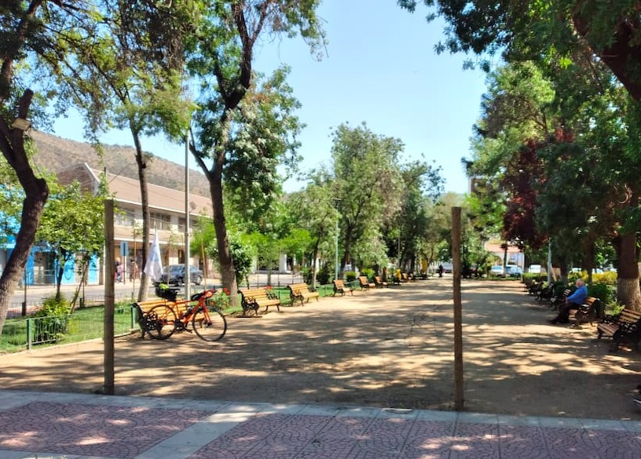

-
Pichanga Cuestas y Túneles - 4ta fecha
El próximo 9 de marzo se desarrollará la 4ta fecha del Campeonato Ultra partiendo desde el Parque Forestal.
Partida: Museo de Bellas Artes. Tendremos 2 horarios oficiales entre los que podrás elegir según tu estrategia.
Partida 1: Viernes 8 de marzo 20:00 hrs.
Partida 2: sábado 9 de marzo 6:30 hrs.
- PC 1: Cuesta Chacabuco.
- Meta 1: San Felipe (0,5 punto)
- PC 2: Cabildo.
- PC 3: Caimanes.
- Meta 2: Illapel (1 punto)
- PC 4: Combarbala.
- Meta 3: Ovalle. (1,5 puntos)
- Meta 4: Casa Ciclista BiCiAdOs (2 puntos)
Tiempo límite para ambas partidas: Domingo 10 de marzo a las 23:59 hrs.
Inscripción correspondiente a un monto voluntario (sugerido 2.000 pesos) en el siguiente link:
Llenar formulario de inscripción
Para estar al día con las novedades no olvides visitar el Instagram del profe
-
Ranking general
A continuación los resultados generales después de la 3ra fecha:
-
Resultados Pichanga Cordillera – Costa - Cordillera 2
A continuación los resultados finales después de la 3ra fecha de pichangas del Campeonato Ultra:
Si quieres conocer cómo se vivió esta fecha, revisa el relato de Carlos Carvajal en el siguiente link:
-
Resultados Pichanga Andina
A continuación los resultados finales después de la 2da fecha de pichangas del Campeonato Ultra:
-
Pichanga Cordillera - Costa - Cordillera
Para inscribirte en la tercera fecha del Campeonato Ultra regístrate en el siguiente formulario:
PC1 Yerba Loca Meta 1 Valle Nevado (1 punto) PC2 Plaza Talagante PC3 Cima Cuesta Cuncumen Meta 2 Plaza San Antonio (1,5 puntos) PC4 Puangue (PC dormitorio) üõå üí§ PC5 Plaza Talagante Meta 3 Lagunillas (2,5 puntos) * Inscripci√≥n con pago correspondiente a un monto voluntario a Beneficio de Sim√≥n Tello, nuestro querido Nutribiker.
-
Campeonato Ultra 2024
El Campeonato Ultra es una iniciativa que busca generar un espacio recreativo/competitivo a la creciente comunidad de ultra ciclistas del contexto nacional; manteniendo el espíritu más puro de esta disciplina a través de la autosuficiencia, con tal de mantener los costos económicos al mínimo para que la mayor cantidad de ciclistas que quieran participar puedan hacerlo, sin ser el factor monetario un obstáculo determinante.
1- Fechas que conforman el campeonato:
El Campeonato Ultra consta de 6 fechas llamadas “Pichangas”, como se le denomina coloquialmente a una actividad deportiva informal. Las 6 fechas son las siguientes:
- 07/12/2023: Pichanga Lo Vásquez
- 06/01/2024: Pichanga Andina
- 10/02/2024: Pichanga Cordillera – Costa - Cordillera 2
- 09/03/2024: Pichanga Cuestas y Túneles
- 07/04/2024: Pichanga Mixta
- 04/05/2024: Pichanga Longa Distancia
1.1- Las Pichangas tendrán una ruta sugerida por la organización, la cual no será obligatoria. Cada ciclista podrá hacer cambios en el recorrido, ya sea por estrategia, comodidad o error en la navegación; siempre y cuando se cumpla con el registro de los puntos de control fotográficos establecidos.
2- Sistema de puntuación y premiación.
Las Pichangas tienen puntajes asignados por segmentos del recorrido y por el recorrido completo. Esto varía en cada desafío, teniendo en consideración la complejidad y extensión de la ruta. El puntaje mínimo entregado por una Pichanga por recorrido completo será de 1 punto y el máximo será de 2,5 puntos: Esto para los recorridos más difíciles.
- Pichanga Lo Vásquez:
Recorrido completo: 1,5 puntos. Primer Segmento: 0,5 puntos.
- Pichanga Andina:
Recorrido completo: 2,5 puntos. Primer Segmento: 1 punto. Segundo Segmento: 1,5 puntos.
- Pichanga Cordillera-Costa-Cordillera:
Recorrido completo: 2,5 puntos. Primer segmento: 1 punto. Segundo Segmento: 1,5 puntos.
- Pichanga Cuestas y Túneles:
Recorrido completo: 2 puntos. Primer segmento: 1 punto.
- Pichanga Mixta:
Recorrido completo: 1 punto.
- Pichanga Longa Distancia:
Recorrido completo: 2 puntos. Primer segmento: 1 punto.
*El puntaje final de cada Pichanga es el obtenido según el segmento al que se llegó. Ejemplo: Si se finalizó la pichanga Lo Vásquez, el puntaje obtenido será: 1,5 puntos. No se le suma el puntaje del Primer Segmento (se considera “Primer Segmento” o “Recorrido Completo”, no la suma de ambas).
El detalle de los segmentos que entregarán puntajes en cada Pichanga será informado en la publicación de cada evento vía Instagram @el_proferod.
2.1- Al finalizar la sexta fecha, quien haya acumulado mayor puntaje habrá ganado el campeonato.
2.2- En caso de existir empate en puntajes se tomarán los lugares de llegada como desempate. Esto solo aplica a participantes que comiencen el desafío en el horario establecido por la organización. No aplica para partidas anticipadas o diferidas.
3- Responsabilidades de la organización:
La organización se encargará de planificar, convocar y difundir el Campeonato Ultra.
La organización recopilará información básica de cada participante mediante la inscripción para estar en contacto y atender dudas respecto al evento.
La organización canalizará las ayudas y colaboraciones de personas e instituciones que cooperen con el Campeonato Ultra.
4- Responsabilidades de los participantes:
Cada participante entiende que la asistencia a las fechas del Campeonato Ultra son voluntarias y por ello acepta los riesgos que implica una ruta en la vía pública, lo que deja exento de toda responsabilidad a la organización de cualquier daño físico, psicológico, material, muerte que pueda sufrir como resultado del evento y su organización.
Cada participante entiende que debe ser totalmente autosuficiente durante el desarrollo de cada fecha del Campeonato Ultra.
Cada participante debe avisar a la organización del retiro del evento y deberá volver a su hogar u otro lugar utilizando sus propios medios.
5- Inscripción:
Las inscripciones se realizarán completando el formulario online más un pago correspondiente a un monto voluntario (sugerido $2.000) a la cuenta indicada en dicho formulario.
Puedes ver la publicación oficial en instagram.
-
Resultados Pichanga Lo Vásquez
A continuación los resultados finales después de la primera fecha de pichangas del Campeonato Ultra:
Puedes ver a los finalistas en este link de instagram.
-
Calendario 2024
Pronto más informaci√≥n sobre los nuevos desaf√≠os y pichangas del 2024 ... üëÄ
-
UltraCat por el Biciados
Domingo 28 de Agosto 8:00 am - Parque O'higgins
El choro Biciados se va a la carrera Bikingman Brasil en octubre de este año. Apoya su aventura participando en el UltraCat de la escuelita. El monto recaudado será para los gastos de su viaje.
Reglamento de carrera:
- La carrera consiste en visitar 3 puntos de control. Cada corredor puede visitar estos puntos en el orden que desee y por la ruta que estime conveniente. Un distintivo certificará la pasada por el punto de control.
- La meta es el cuarto punto y su ubicación será revelada cuando la corredora o corredor llegue a su tercer punto y muestre los distintivos.
- Será él o la ganadora quién pase por todos los puntos de control y llegue primero o primera a la meta con todos los distintivos.
¡Atrévete y dale con todo!
Datos para transferencia:
Fernando Aguilera
Cuenta rut Banco Estado
16.439.266-k
saludospedales@gmail.com
Asunto: UltraCatLa inscripción tiene un valor de $10.000 pesos, dinero que irá en directa ayuda de don Feña Biciados en su misión de ir a conquistar la Bikingman Brasil.
No olvides enviarnos el comprobante de pago de tu inscripción a quenotefalteaire@gmail.com luego de completar el formulario y estar atento al instagram de la escuelita para las últimas novedades.
-
Desafío 3x3 200 km Todos por Mona
¿CUÁNTO PUEDES PEDALEAR EN 3 HORAS?
Domingo 27 de Marzo entre 8:00 a 11:00 hrs
- Arma tu equipo de 3 integrantes
- Crea tu propia ruta de manera estratégica
- Registra tu actividad en Strava u otra app similar dentro del horario indicado 8:00 a 11:00 hrs.
- Suma junto a tu equipo la mayor cantidad de kilómetros posible.
Serán premiados: el equipo, la mujer y el hombre que acumulen más kilómetros.
INSCRIPCIONES CERRADAS
La inscripción del equipo tiene un valor mínimo de $9.000 pesos, dinero que irá en directa ayuda de Mónica, integrante de la escuelita, víctima de un asalto en el que perdió su bicicleta y equipamiento de ultra ciclismo.
No olvides enviarnos el comprobante de pago de tu inscripción a quenotefalteaire@gmail.com luego de completar el formulario y estar atento al instagram de la escuelita para las últimas novedades.
-
De vuelta a las ultra - 300 km / 250 km
En esta ocasión podrán elegir la modalidad de 300 km con 1700 m desnivel o la de 250 km con 1370 m de desnivel.
Ambas modalidades comparten punto de partida, meta, PC1, PC2 y último PC, pero quienes vayan por los 300k además deben considerar los 2 puntos de control fotográficos extra.
Modalidad 300 km
A diferencia de la modalidad 250 km, acá se deben considerar los siguientes desvíos para cumplir con todos los PC:
- KM 148: Desvío hacia el PC3 de las Bodegas de Rangue en el km 162.8
- KM 210: Desvío hacia el PC4 la Medialuna de Naltagua en el km 223.1
Punto de control Lugar Km Horario Inicio Parroquia San Vicente de Paúl 0 07:00 PC1 Parque Maipo 70.7 09:01 - 11:41 PC2 Valle Hermoso con 18 de Sep 125.3 10:35 - 13:32 PC3 *üì∏ Bodegas de Rangue 162.8 11:39 - 15:29 PC4 *üì∏ Medialuna Naltagua 223.1 13:22 - 18:38 PC5 Plaza de Armas de Talagante 243.5 13:57 - 19:41 Meta Plaza Av. Ecuador 307.3 15:47 - 23:00 Importante: *üì∏: sacarse una foto y enviarla a la organizaci√≥n v√≠a whatsapp.
Modalidad 250 km
Punto de control Lugar Km Horario Inicio Parroquia San Vicente de Paúl 0 07:00 PC1 Parque Maipo 70.7 09:01 - 11:32 PC2 Valle Hermoso con 18 de Sep 125.3 10:35 - 15:01 PC3 Plaza de Armas de Talagante 187.6 12:22 - 19:01 Meta Plaza Av. Ecuador 251.3 14:10 - 23:00 Inscripciones cerradas
Este evento cuenta con una inscripción de $10.000 a beneficio de nuestro escuelito Maldo con el fin de poder cubrir parte de los gastos médicos que tuvo que manejar por una operación médica (de la cual ya se encuentra fírmemente pedaleando otra vez!).
No olvides enviarnos el comprobante de pago de tu inscripción luego de completar el formulario y estar atento al instagram de la escuelita para las últimas novedades.
-
Desafío Variante Ultra 200 km - Resultados

Recaudación
Entre los 84 inscritos y los aportes externos a modo de donación logramos recaudar un total de $925.000.
Damos las gracias a las siguientes personas, agrupaciones y proyectos por colaborar con hacer más entretenido el desafío:
- Map8 ONG: por aportar las ricas frutas de los puntos de control
- SharkPowerBars y LarabikersChile: por aportar las barritas del PC1
- Curva 40: por aportar premio a sortear entre los inscritos
- Vrizka Bags: por aportar premio a sortear entre los inscritos
- Darío: por facilitar su cámara fotográfica
- Don Bici: por ofrecer su vehículo para recoger a algún ciclista rezagado
- Erna y Raúl: por ayudar con los PCs y los vehículos de apoyo

Premios
Entre los premios se encuentran el reconocimiento a espíritu ultra, el sorteo de un bolso de manillar Vrizka Bags y entrega de 6 caramagnolas donadas por Curva 40.
- Espíritu ultra
Sebastián Milla por su compañerismo y ayudar a trasladar a un ciclista que tuvo que retirarse. Enrique Alarcón por compartir su ropa seca con otros ciclistas que lo necesitaban.- Sorteo caranagnolas
Paulo Soto, Luis Chamorro Soto, Ignacio Gaete y Carlos Suárez- Sorteo bolso Vrizka
Nicolás Vittori
Resultados
A continuación las cifras de todos participantes con sus tiempos de llegada en cada punto de control
*DNS no llegó al punto de partida | DNF no terminó la ruta

Fotos del evento

Partida, puntos de control y meta.
Punto de control Lugar Km Horario ** Inicio Plaza Metro Escuela militar 0 07:00 - 07:30 PC1 Cumbre Cuesta Chacabuco 81.7 10:00 - 12:55 PC2 Estaci√≥n Rungue 113 11:05 - 15:05 PC3 Portal Chicauma *üì∑ 163 12:40 - 18:20 Meta Plaza Av. Ecuador 206 21:00 cierre final Importante: *üì∑: al llegar a la entrada de Chicauma debes sacarte una foto con el portal de fondo y enviarla al grupo de whatsapp para anotar tu tiempo. En el PC1 y PC2 contarán con agua y frutas junto a escuelitos que estarán registrando sus tiempos.
La ruta
Serán 200 km con casi 3000 m de desnivel acumulado recorriendo la zona norte de la Región Metropolitana, atravesando los pasos de Pie Andino, cuesta Chacabuco, cajón de los Valles y Caleu antes de tomar la vuelta hacia Santiago.
Puedes encontrar los detalles de la ruta en Ride With GPS y en Strava.
No olvides enviarnos el comprobante de pago de tu inscripción luego de completar el formulario y estar atento al instagram de la escuelita para las últimas novedades.
-
Desafío 3x3 Altimetría - Resultados
Recaudación
El computo final de donaciones recibidas por inscripciones logró un total de $745.000.
Damos las gracias a las siguientes marcas, agrupaciones y proyectos por colaborar con premios para hacer más entretenido el desafío:
- Choike: 9 choike straps, 3 x-pocket y 1 rollito
- CyclingWolf: tricota
- Reinas del Pedal: bolso, gorro y calcetines
- Nawam: 5 caps
- Turbi tienda: adaptador pedal plataforma
- Aportes anónimos: 3 pack de geles deportivos y un bolso de manillar Rhinowalk.
Esta vez tuvimos un premio sorpresa dirigido a las personas que hubieran participado de las dos versiones del 3x3, demostrando compromiso por la causa y también la fuerza de haber madrugado para disfrutar pedaleando. No podemos dejar de agradecer a FIT BIKE Biomecánica Ciclismo que se puso con un bikefit de premio!
Igual que la vez pasada el tramo a considerar iba entre 6 y 9 de la mañana. 82 hombres y 34 mujeres participaron esta vez con un clima más helado que el anterior y con el desafío de escalar lo que más pudieran en esas 3 horas.
Premios
Entre los premios se encuentran los reconocimientos a mayor desnivel acumulado y también formato de sorteo al azar entre los equipos que nos enviaron sus registros de ruta.
- Equipo mayor desnivel (7622 m)
Emilio Ramirez, Rodrigo Vergara y Fernando Swett (Sin PR no vale)- Mujer mayor desnivel (2276 m)
Paula Viertel (Los ruteros)- Hombre mayor desnivel (2904 m)
Nicolás Poblete (Team VLP)- Sorteo nivel 3 - Ojos del Salado
Paula Viertel, Luis Villalón y Jorge Esponda (Los ruteros - 7323 m)- Sorteo nivel 2 - Cerro el Plomo
Rodrigo Soto, Álvaro Soto y Luis Valenzuela (LowperfilTEAM - 5746 m)- Sorteo nivel 1 - Volcán Puntiagudo
Felipe Beiza, Juan Carlos Calderón y Sebastián Tapia (RC RACING - 5291 m)- Sorteo participante comprometido
Fernando Aguilera (Los Papayas con Smog - 3504 m)Los ganadores serán contactados por interno para hacer la entrega de los premios.
Resultados
A continuación las cifras de todos los equipos que participaron del evento, separados segun los niveles que alcanzaron
Desnivel Nombre equipo 7622 Sin PR no vale ü•á 7323 Los ruteros 7221 Team VLP 7134 Biketribe 7016 Jaufbike 6936 Greyhound proyect 
17 equipos
Desnivel Nombre equipo 6678 DDRR 6568 EligeVivirEnLaOscuridad 6510 CS-FLOW 6495 La pichimota 6443 TEAM 5 AM 6402 Los Narutos 6289 The Killers 6203 Team CCB 6179 Plano Falso 6107 TEAM PRAXIS 6078 NICERs 5907 Mankebike 5813 Los Facheritos 5746 LowperfilTEAM 5695 Pedalea hoy si quieres hacer la diferencia mañana 5502 CCFUGA - Peuco 5433 CCFUGA - Cernícalo Desnivel Nombre equipo 5410 ECUCH 5291 RC RACING 5147 Pedalocos 5082 Apotopé Bici Club 5053 The Drink Team (Lara Biker's) 4853 Arackar 4792 Valeeex3 4772 Lara Biker's Alpargata Team 4763 Malatesta Audax Club 4696 SinMusloBike 4684 Los Sin Permiso 4510 TeamPencaBike 4397 Los Desconocidos 4388 BCC bichotas cyling club 4326 Mafuba.veganfood 4317 Los cuchufletas 4312 Los escuelitos 4250 Los PR 4176 Tres generaciones 4175 GIRL's FULL AM 4155 team mapu 1 4059 Cabras del monte 4026 Ciclismo RNK 4000 Muñecxs Mix 3789 Forever Bike 3690 Team Foreveryoung 3562 Team On Fire 3504 Los Papayas con Smog 3461 Team completo 3423 Cadena sucia 3353 Salior Team 3330 Montañistas de escritorio 3211 The Rollers MTB 3180 Los malos pa' subir 3147 Team Pump it 2902 Los Ciclosherpas 2825 Los shiquititos 2822 Xtreme team 2808 Guau Guau Guau 2610 Los gochos team lara bikers No alcanzaron (pero lo intentaron!)
9 equipos
Desnivel Nombre equipo 2363 Es lo que hay 2157 Rueditas solidarias 2105 Los Palominos 2039 Lara Biker's Venezuela 1820 Audax-Húsares Team 1569 Los sin subida 1360 Perros Salvajes 260 Pichurrias Team 0 1,2,3 por ti! ¡Atentos al instagram de la escuelita @quenotefalteaire para el próximo desafío!
* Si te perdiste el en vivo del sorteo, lo puedes encontrar acá.
-
Desafío 3x3 Altimetría
Desafío 3x3 en su segunda versión, esta vez pondremos a prueba tus capacidades para escalar. Quién se anima? El sábado 8 de mayo cada equipo, conformado por 3 integrantes, debe registrar una ruta libre de 6 a 9 de la mañana. No es necesario que los integrantes del equipo estén juntos.

Esta vez lo que importa son los metros subidos, no tus kilómetros. Tendrémos 3 niveles a superar y la suma de la altimetría de los 3 integrantes debe ser igual o mayor a la altura de cada nivel:
- Nivel 1 Volcán Puntiagudo 2493 mts.
- Nivel 2 Cerro el Plomo 5424 mts.
- Nivel 3 Nevado Ojos del Salado 6893 mts.
Por ejemplo, para que un equipo alcance el nivel 2 del Cerro el Plomo deberían hacer, en promedio, 1808 m de desnivel por persona. El equivalente a 600 m por hora. Alcanzable?
INSCRIPCIONES CERRADAS
72 equipos inscritos
Motívate, participa y comparte!
-
Desafío 3x3 200 km - Resultados
Recaudación
Entre los 162 equipos que participaron con inscripciones y los aportes externos a modo de donación logramos recaudar un total de $1.700.000.
Damos las gracias a Velo Boutique, Travel & Gravel Bikes, Oh my bike!, Duck Bike Chile, Mardones Bikepacking, WOCCH - Women’s Cycling Chile, Brevet Chile, OMC y a un aporte anónimo por haber colaborado con los premios.
De los casi 500 ciclistas que participaron, 130 fueron mujeres. Tuvimos inscritos desde los 14 a los 64 años, con un promedio de 32 años y con todo tipo de bicicletas: ruteras (mayoría), gravel, triatlón, mtb, cx, urbana y piñón fijo.

Premios
Entre los premios se encuentra el reconocimiento a mayor kilometraje y también formato de sorteo al azar entre los equipos que nos enviaron sus registros de ruta.
- Equipo mayor distancia (349.22 km)
Timothy Ruedlinger, Sebastián Araya y Marcos Bueno (Los Bebos)- Mujer mayor distancia (87.47 km)
Tamara Santander (Team 5AM)- Hombre mayor distancia (121.5 km)
Abraham Paredes (PichurriasCycling)- Sorteo equipo 1
Francisco Valenzuela, Marco Sans y Harlet Villegas (Los Sin Permiso)- Sorteo equipo 2
Daniel Tovar, Michael Parra y Maikel Ramírez (The Drink Team, Lara Biker's)- Sorteo ciclista 1
Jaeel Moraga (Abawinile)- Sorteo ciclista 2
Jean Muñoz (Los Fixones)- Sorteo al esfuerzo
Ariel Torres (Los memos bike)Los ganadores serán contactados por interno para hacer la entrega de los premios.

Resultados
Valoramos y agradecemos cada kilómetro aportado por los participantes, desde aquellos que no lograron sumar los 200 km que planteaba el desafío hasta los pocos que superaron los 300 km por equipo.

¡Atentos al instagram de la escuelita @quenotefalteaire para el próximo desafío!
* Si te perdiste el en vivo del sorteo, lo puedes encontrar acá.
-
Desafío 3x3 200 km finalizado

Casi 500 ciclistas salieron a la calle esta mañana con el objetivo de pedalear lo que más pudieran entre las 6 y las 9 de la mañana.
Ahora nos encontramos procesando la información para poder tener los resultados lo antes posible y ya desde la próxima semana comenzar la repartición de los premios a los equipos ganadores.
Podemos anticiparles que el equipo con mayor distancia hizo sobre 300 km y el ruta personal más larga fue de 121 km.
Si quieres los resultados lo antes posible, recuerda revisar tu mail para enviarnos los links de strava y asi poder validar el kilometraje de tu equipo.
Estamos muy felices de la convocatoria y de todo lo que logramos recaudar entre todas las personas que participaron en este desafío.

Ver Club de Strava de la escuelita.
-
Desafío 3x3 200 km
Los equipos se conforman por 3 ciclistas, quienes sumarán kilómetros durante 3 horas con el fin de completar un total de 200 km entre sus 3 registros. Cada participante puede hacer una ruta distinta y sin necesidad de juntarse, si así lo prefieren. No es requisito pedalear juntos, pero el rango de 6:00 a 9:00 sí lo es. La inscripción del equipo tiene un valor de mínimo de $9.000 para costear gastos médicos de Valentina.
INSCRIPCIONES CERRADAS
162 equipos inscritosRevisa nuestro instagram instagram.com/quenotefalteaire para estar al tanto de las últimas novedades del evento.
Preguntas frecuentes
- ¿Cuánto cuesta inscribirse? - Desde 9 mil por equipo, pero pueden aportar más si así lo desean.
- ¿Tenemos que hacer la misma ruta los 3? - No, pueden hacer la que quieran y donde quieran, mientras sumen 200 entre los/as 3. Elegir una ruta más o menos plana que te permita partir a las 6 y estar de vuelta en casa a las 9 es el ideal.
- ¿Por qué entre 6:00 y 9:00? - Porque en estado de cuarentena ese es el horario premitido para hacer deportes en Chile sin necesidad de pedir permisos. Al ser un feriado, no aplica el criterio de 7:00 a 8:30 de un viernes normal. (Ver aviso oficial)
- ¿Y si no vivo en Chile pero quiero participar? - Entonces tu ruta debe contemplar las restricciones oficiales de tu localidad en relación al viernes 2 de abril. Puedes motivar a otros amigos en tu país también a que se unan.
- ¿Cuenta en rodillo? - No, la actividad aplica al aire libre y parte del desafío es levantarse y lidiar con las condiciones de la ruta.
- ¿Y si no uso Strava? - Puedes usar la aplicación que prefieras, mientras el registro de tu pedaleo quede público para verificar.
- ¿Cómo demuestro los kms que hice? - Comienza el registro en tu app a las 6:00 y a las 9:00 la detienes, así podremos ver el kilometraje que hiciste. Te aconsejamos poner una alarma a las 8:50 para que recuerdes parar el registro.
- ¿Qué tipo de bicicleta necesito? - La que tengas en la casa, pero que no sea eléctrica. Si tienes rutera, fijo, mtb, gravel, dh, mini cic, cargo, tandem ... todo es bienvenido. Lo importante es que tus piernas sean el motor.
- ¿Tengo que llevar algo? - Aconsejamos una o dos botellas de agua y un snack para reponer energías mientras pedaleas. Llevar herramientas, bombín y cámara de repuesto te puede hacer evitar perder tiempo (y kilómetros) en caso de pinchazo. Considera luces y/o reflectantes para el comienzo sin luz de día.
- ¿Necesito experiencia previa? - Piensa que para completar 200km, cada participante debería hacer cerca de 67 km. Durante 3 horas se debería mantener un ritmo de 22.2 km/hr promedio (incluyendo paradas). Recuerda que la falta de km de un integrante puede ser compensada por el exceso de otra persona. Si es primera vez que haces tantos kms, prefiere rutas pavimentadas, planas y posibildad de usar bicicleta de ruta o similar.
-
Fase Ultra - Volviendo a la ruta
FOTOS DEL EVENTO
Debajo de cada imagen existen los links a Google Drive donde encontrarás las fotos de Bicipensante, Casablanca Gravel y las del equipo de la Escuelita en distintos lugares de la ruta como la partida, PC1, Ibcacahe, PC2, Tapihue, PC3, Lo Prado ida y vuelta, cruce Pataguilla y meta.
Los tiempos finales de cada participante los puedes encontrar en www.bicineta.cl/fase-ultra.

Ver fotos de Bicipensante ver en Google Drive
Ver fotos de Escuelita ver en Google Drive
Ver fotos de Casablanca Gravel ver en Google DrivePUNTO DE PARTIDA
Desde las 6:15 AM ya podrás retirar tu número para identificarte en los puntos de control para el registro de tus tiempos. Recomendamos llegar anticipadamente para evitar atochamientos innecesarios y partidas tardías. Recuerda traer tu mascarilla.
A las 7:00 AM se da la partida con los primeros kilómetros neutralizados desde la Plaza Av. Ecuador por la ruta 68 a cargo del equipo de la escuelita llevando una bandera al frente del grupo hasta que ya llegando a zona más segura cada quien tomará el ritmo que más le acomode.

Recuerda tu mascarilla para la llegada al punto de partida, el primer tramo neutralizado, los puntos de control y las posibles compras en negocios a lo largo de la ruta.
RUTA Y ALTIMETRÍA

Ve la ruta en detalle en Ride with GPS o Strava
Ve puntos importantes en Google Maps
Descarga los archivos .gpx, .tcx y .kml en Google Drive
PUNTOS DE CONTROL
Contaremos con seguimiento en vivo del paso de los participantes por cada punto de control para que tus amigos y familiares puedan saber a qué hora pasaste por cada PC (pronto el link)
Punto de control Lugar Km Horario ** Inicio Plaza Av. Ecuador 0 06:15 - 07:17 PC1 Estatua ciclista Mar√≠a Pinto *üì∑ 50 08:42 - 10:42 PC2 Bajada Ibacache sector Los Maitenes 87,5 09:46 - 13:12 PC3 Plaza de Curacav√≠ 151,7 12:17 - 17:32 Meta Plaza Av. Ecuador 206 20:47 cierre final Importante: *üì∑: al llegar a la estatua debes sacarte una foto junto a ella y enviarla al grupo de whatsapp para anotar tu tiempo. El PC2, PC3 y Meta cuentan con equipo de la escuelita y son ellos quienes registrarán la foto y tu tiempo.
** La partida comenzó a las 07:17 por lo cual se actualizaron los horarios de cierre de cada PC y Meta con +17 min.

PC1 KM 50 MARÍA PINTO

Estatua ciclista al doblar en María Pinto hacia el norte. La foto debe ser enviada al grupo de whatsapp al momento de pasar para que quede registrado tu tiempo correctamente. Existen negocios para abastecerse y los próximos kilómetros siguen por ciclovía rumbo a la cuesta Ibacache.
PC2 KM 87.5 BAJADA IBACACHE

Bajando Ibacache en el sector de Los Maitenes se encuentra una fuente de soda a mano derecha donde encontrarás al equipo de la escuelita con una bandera para anotar tu tiempo. Posta rural cercana. Luego sigues hacia Casablanca donde encuentras de todo para comer o para hidratarte y así prepararte para la cuesta más empinada de la ruta. ¡Carga agua!
PC3 KM 151,7 PLAZA CURACAVÍ

Cruzando Curacaví se encuentra la plaza principal a mano izquierda donde contarás con asientos, sombra y negocios para comprar. El equipo de la escuelita te recibirá en el PC con la misma bandera y podrás recuperar energías con agua y fruta para así poder seguir hacia la última cuesta del día volviendo a Santiago por Lo Prado.
META KM 206 PLAZA AV ECUADOR

La meta se encuentra en el mismo lugar del comienzo, en la Plaza Ecuador donde podrán registrar su tiempo final a descansar y celebrar.
LISTA DE INSCRITOS
Revisa los tiempos de cada participante a lo largo de los puntos de control en vivo en
www.bicineta.cl/fase-ultra
</ul>
{kind=link}
{kind=link}
{kind=link}
{kind=link}
{kind=link}
{kind=link}
{kind=link}
{kind=link}
{kind=link}
{kind=link}
{kind=link}
{kind=link}
{kind=link}
{kind=link}
{kind=link}
{kind=link}
{kind=link}
{kind=link}
{kind=link}
{kind=link}
{kind=link}
{kind=link}
{kind=link}
{kind=link}
{kind=link}
{kind=link}
{kind=link}
{kind=link}
{kind=link}
{kind=link}
{kind=link}
{kind=link}
{kind=link}
{kind=link}
Todo participante entiende las responsabilidades mínimas básicas de participar en eventos de este tipo acorde al documento de exención de responsabilidades.